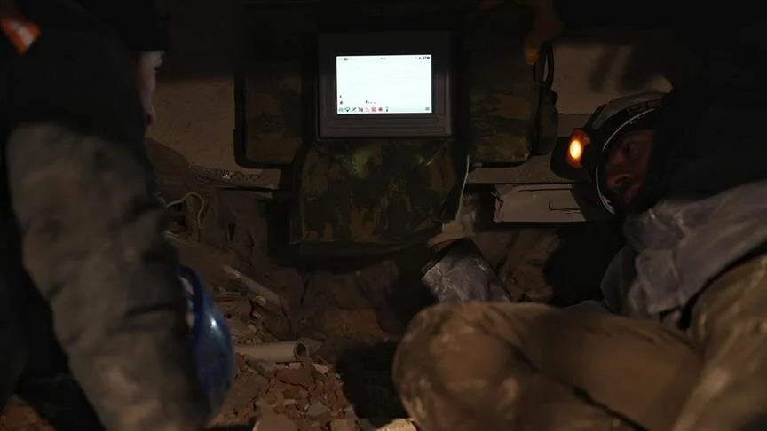
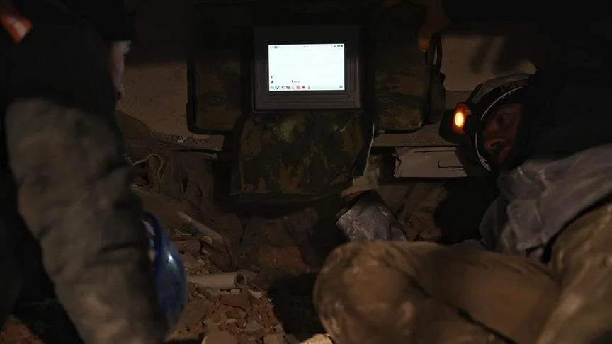

Facilitating Disaster Response Teams
"Quake Sensor incorporates state-of-the-art debris scanning capabilities that play a crucial role"
The prototype is designed to provide a user-friendly interface that significantly simplifies the workflow of disaster response teams. It offers intuitive tools and features that enable teams to quickly access and analyze the data provided by Quake Sensor, receive real-time guidance to their designated locations, and make informed decisions with ease.
One of the key aspects of the user-friendly interface is the instant visualization of data. The prototype presents the information collected by Quake Sensor in a clear and easily understandable manner, such as through interactive maps, graphs, and charts. This visual representation allows response teams to quickly grasp the overall situation, understand the severity of the disaster, and identify critical areas that require immediate attention.
Furthermore, the interface provides real-time updates and alerts, ensuring that response teams stay informed about any changes or developments during the rescue operation. This timely information empowers teams to adapt their strategies and allocate resources effectively, enabling them to respond swiftly to evolving circumstances.
Another valuable feature of the user-friendly interface is the integration of navigation and guidance tools. The prototype utilizes GPS and mapping technologies to provide accurate and precise directions to the designated locations. Response teams can access these directions directly from the interface, eliminating the need for separate navigation devices or manual map reading. This streamlines the process of reaching affected areas and optimizes the team's efficiency in deploying resources and personnel.
Additionally, the interface offers decision-support features to assist response teams in making quick and informed decisions. It can provide contextual information, recommendations, and actionable insights based on the data collected by Quake Sensor. This enables teams to assess the situation more comprehensively, evaluate different response options, and choose the most effective course of action promptly.
The user-friendly interface also facilitates seamless communication and collaboration among team members. It provides a centralized platform where team members can exchange information, share updates, and coordinate their efforts in real-time. This enhances teamwork and ensures that all team members are on the same page, fostering a cohesive and coordinated response to the disaster.
In summary, the user-friendly interface of the prototype plays a vital role in facilitating the work of disaster response teams. Through instant data visualization, real-time updates and alerts, integrated navigation and guidance tools, decision-support features, and seamless communication capabilities, the interface empowers response teams to access critical information, make quick decisions, and coordinate their efforts efficiently. This streamlined workflow enhances the overall effectiveness and responsiveness of the teams during disaster response operations.
 



Share Your Thoughts!

Contact Us